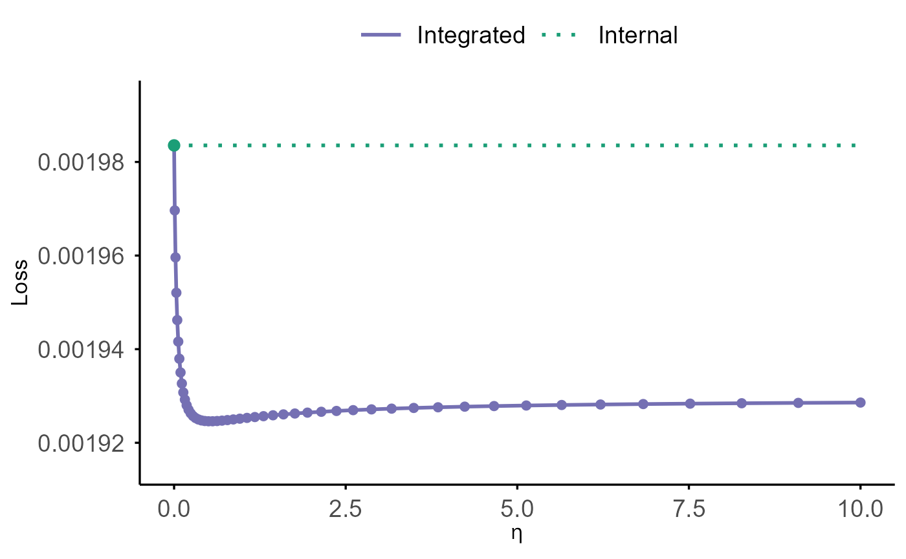
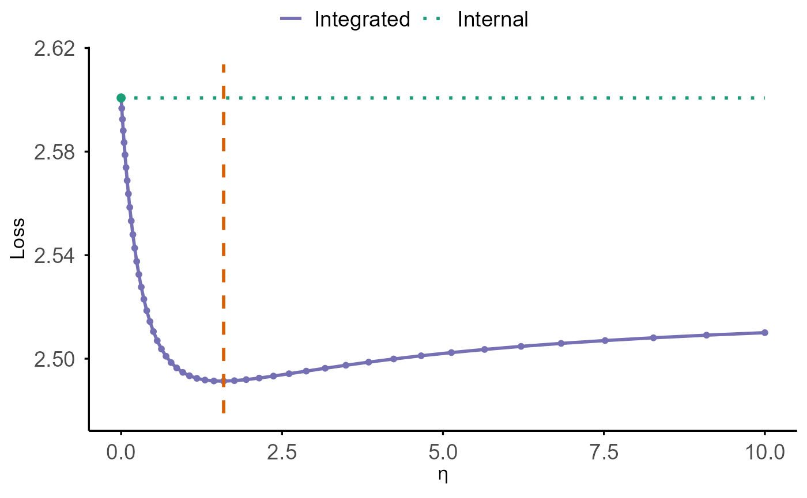
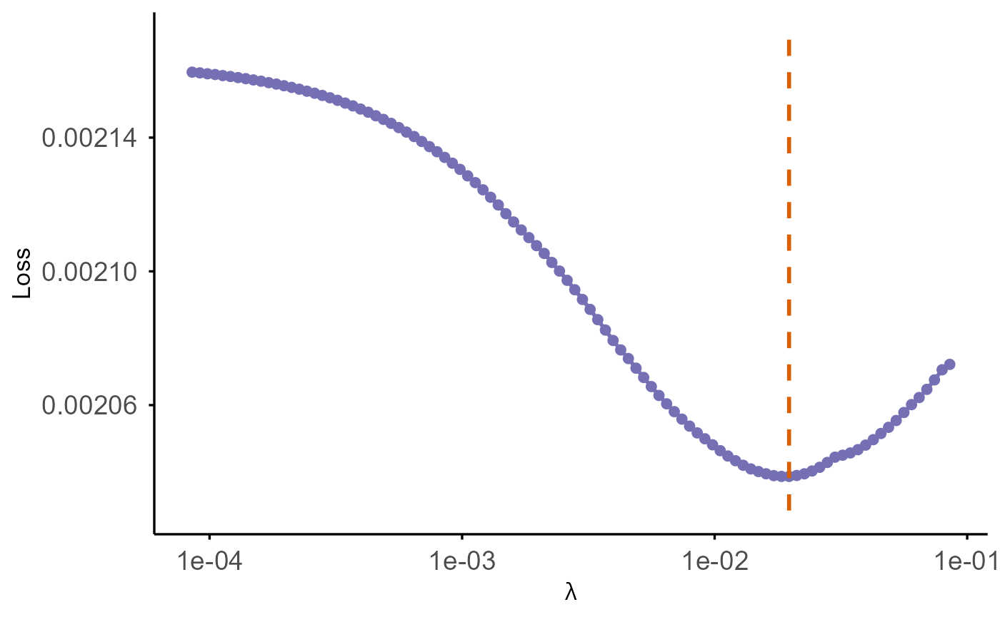
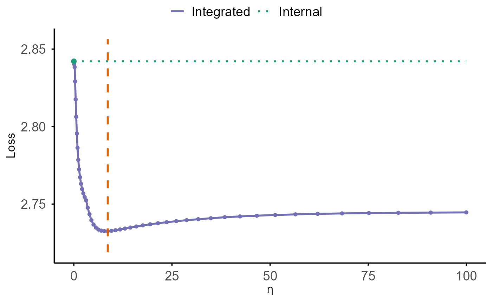
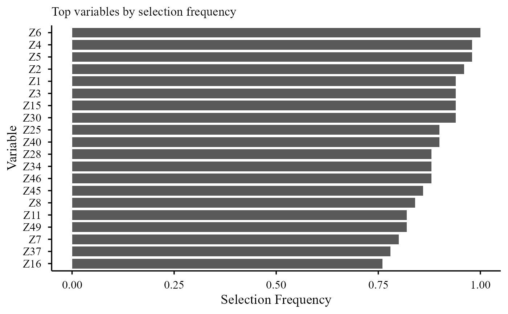
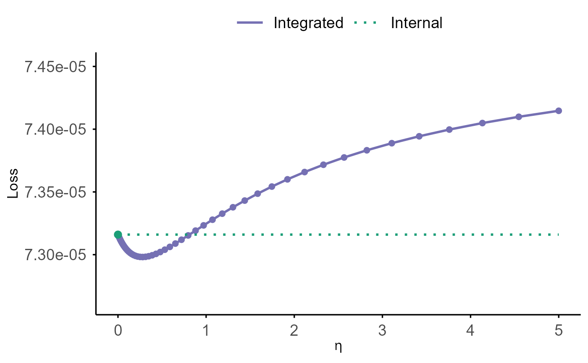
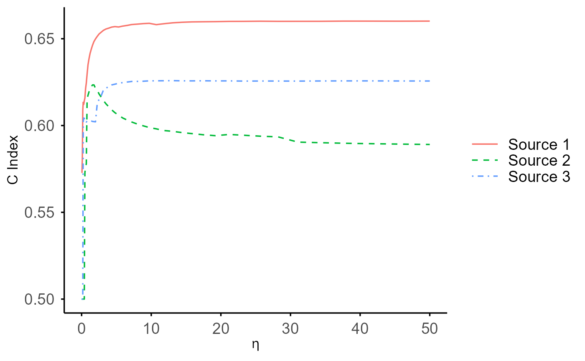
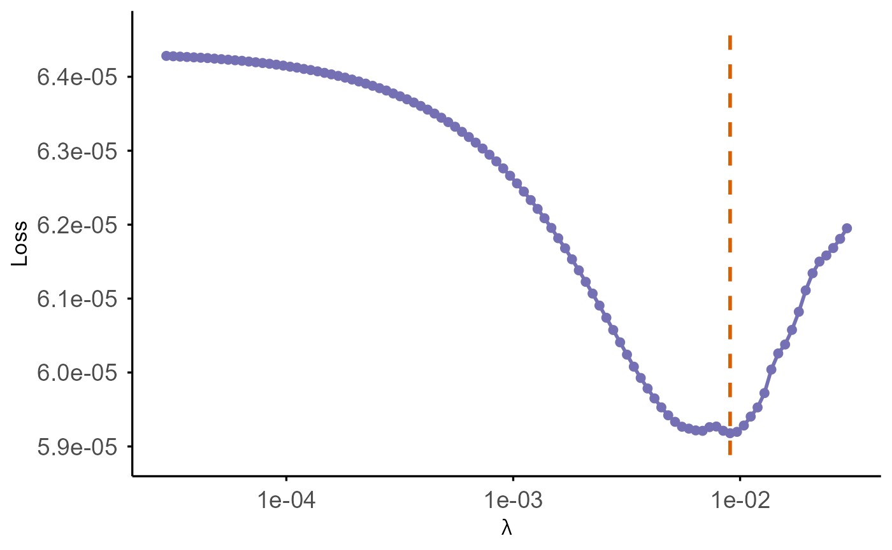

SurvBregDiv: Transfer Learning for Time-to-Event Modelling via Bregman Divergence
SurvBregDiv.RmdIntroduction
Accurate prognostic modeling is a central goal in survival analysis. The rapid expansion of large-scale biobank initiatives—with rich genetic, molecular, imaging, and electronic health record data—has created new opportunities to improve predictive performance in clinical and epidemiologic research. However, these datasets often exhibit limited effective sample sizes, high dimensionality, low signal-to-noise ratios, and additional practical constraints including privacy considerations and restricted data access.
Integrating external information offers a principled strategy for improving model efficiency. Yet, classical data-integration methods typically rely on the assumption that multiple datasets arise from a common data-generating mechanism. In modern biomedical applications, this assumption is rarely satisfied. Misspecification due to population heterogeneity can induce substantial bias, motivating the development of transfer-learning approaches that explicitly accommodate between-source discrepancies.
While Bregman divergence has been successfully applied to borrowing information in binary-outcome settings, extending such ideas to censored time-to-event outcomes is nontrivial due to right censoring and the limited nature of available external survival information (e.g., predicted risk scores, fitted regression coefficients, or hazard ratios without access to a baseline hazard).
Beyond full-cohort survival studies, many biomedical investigations rely on the nested case–control (NCC) design to alleviate the burden of labor-intensive measurements, high-cost data acquisition, and destructive or finite biospecimen assays. Under an NCC design, only a small number of matched controls are sampled at each failure time, producing survival data that are analyzed through conditional logistic regression applied to matched risk sets. Despite its practical relevance, no existing methodology or software supports transfer learning or external information borrowing under NCC designs.
The SurvBregDiv package addresses these challenges by
providing a unified transfer-learning framework for both full-cohort Cox
data and nested case–control designs. The methods integrate external
information in a privacy-preserving manner and are applicable to both
low-dimensional settings and high-dimensional variable selection with
ridge, lasso, and elastic net penalties.
Key Features
Transfer learning via KL/Bregman shrinkage
Integrates external information through Bregman divergence–based penalization, enabling adaptive borrowing from heterogeneous data sources.Privacy-preserving external information use
Operates on summary-level external inputs—such as fitted coefficients or risk scores—without requiring individual-level external data access.Heterogeneity-aware borrowing
Accommodates population differences through tuning-parameter–controlled shrinkage, selectively borrowing strength only when sources are compatible.High-dimensional modeling with regularization
Supports penalized KL-integrated models, including ridge, lasso, and elastic net penalties for variable selection and shrinkage.Flexible external information formats
Allows external inputs in the form of coefficients, risk scores, or partially overlapping covariate sets.Built-in cross-validation for tuning
Provides cross-validation criteria tailored for survival outcomes, including C-index, predicted deviance, and V&VH loss.
This vignette introduces the core functionalities of
SurvBregDiv and illustrates workflows for both low- and
high-dimensional applications.
Installation
You can install from CRAN:
install.packages("SurvBregDiv")Or install the development version of SurvBregDiv from
GitHub:
require(devtools)
require(remotes)
remotes::install_github("UM-KevinHe/SurvBregDiv", ref = "main")Quick Start
This section provides a brief overview of the main functions using example datasets included in the package.
First, load the package:
Full-Cohort Cox Model with Bregman Divergence Integration
Low-Dimensional Integration
The low-dimensional Bregman-divergence–integrated Cox model is
intended for settings where the number of predictors is modest. External
information—either in the form of external Cox coefficients
(beta) or pre-computed external risk scores
(RS)—is incorporated through a Bregman-divergence
penalization mechanism.
The tuning parameter eta controls the strength of
information borrowing:
-
eta = 0reduces to the standard Cox model (no external borrowing), and
- larger values of
etaincreasingly shrink the fitted coefficients toward the external information.
Two specific divergence choices are supported:
-
Kullback–Leibler (KL) divergence, implemented via
coxkl(), and
-
squared Mahalanobis distance, implemented via
cox_MDTL().
For both formulations, the optimal eta can be selected
through cross-validation using cv.coxkl() or
cv.cox_MDTL(), respectively.
Low-dimensional Example Dataset:
We illustrate the workflow using the built-in low-dimensional
simulated dataset ExampleData_lowdim, which consists of a
training set (100 samples) and a test set (2000 samples) with 6
predictors. We first extract the training components:
data(ExampleData_lowdim)
train <- ExampleData_lowdim$train
test <- ExampleData_lowdim$test
z <- train$z
delta <- train$status
time <- train$time
strat <- train$stratumand externally derived coefficients beta_external:
beta_ext <- ExampleData_lowdim$beta_external_fairWe generate a sequence of tuning parameter eta values
via the internal utility generate_eta() and fit the
integrated model across this grid:
eta_list <- generate_eta(method = "exponential", n = 50, max_eta = 10)Model Fitting:
For the KL divergence–based integrated model, we use the function
coxkl():
coxkl_est <- coxkl(
z = z,
delta = delta,
time = time,
stratum = strat,
beta = beta_ext,
etas = eta_list
)For the squared Mahalanobis distance–based integrated model, we use
cox_MDTL():
cox_MDTL_est <- cox_MDTL(
z = z,
delta = delta,
time = time,
stratum = strat,
beta = beta_ext,
vcov = NULL,
etas = eta_list
)Note that the squared Mahalanobis distance formulation requires a
user-specified weighting matrix via the argument vcov. In
standard Mahalanobis distance settings, is taken to be the inverse
covariance matrix of the coefficients. If vcov = NULL, the
function defaults to the identity matrix.
Users may instead supply an external risk score vector:
RS_ext <- as.matrix(z) %*% as.matrix(beta_ext)
coxkl_est.RS <- coxkl(
z = z,
delta = delta,
time = time,
stratum = strat,
RS = RS_ext,
etas = eta_list
)For datasets containing tied event times, users may apply the
coxkl_ties() function, which extends integrated Cox model
to handle ties. The following example illustrates the use of the Breslow
method for tie handling:
time_ties <- round(time, 2) # Rounding time introduces ties for demonstration
coxkl_ties_est <- coxkl_ties(
z = z,
delta = delta,
time = time_ties,
stratum = strat,
beta = beta_ext,
etas = eta_list,
ties = "breslow"
)Hyperparameter Tuning via Cross-Validation:
The function cv.coxkl and cv.cox_MDTL
performs K-fold (default 5) cross-validation to choose the integration
parameter. It supports four criteria:
-
"V&VH"— V&VH loss
-
"LinPred"— predicted partial deviance
-
"CIndex_pooled"— pooled comparable pairs
-
"CIndex_foldaverage"— per-fold stratified C-index
Below is an example using the default "V&VH"
criterion:
cv.coxkl_est <- cv.coxkl(
z = z,
delta = delta,
time = time,
stratum = strat,
beta = beta_ext,
etas = eta_list,
nfolds = 5,
criteria = "V&VH",
seed = 1)Visualization:
Objects of model fittings (i.e. from either coxkl or
cox_MDTL) from can be visualized using the S3 plotting
method plot().
This function displays how model performance changes across the
eta–sequence used during fitting.
Two types of performance criteria are supported:
"loss"
(default; −2 × partial log-likelihood, normalized by sample size)"CIndex"
(stratified concordance index)
Users may directly call the plot() method to visualize
the model’s fitted performance on the training data without providing
additional test data. If a test set is supplied, performance metrics are
computed using the test set instead:
plot(
cox_MDTL_est,
test_z = test$z,
test_time = test$time,
test_delta = test$status,
test_stratum = test$stratum,
criteria = "loss"
) 
The cross-validated performance curve from hyperparameter tuning
functions cv.coxkl or cv.cox_MDTL can be
visualized directly using cv.plot():
cv.plot(cv.coxkl_est)
- The solid purple curve displays the cross-validated loss across
different values of
eta. - The green dotted horizontal line marks the internal baseline at
eta= 0, representing the model that does not incorporate external information. - The vertical dashed orange line indicates the optimal
etavalue, where the cross-validated loss is minimized.
A comparison between the purple curve and the green baseline shows
whether borrowing external information improves prediction performance.
Whenever the purple curve falls below the green line, using external
information (eta > 0) yields better predictive accuracy
than relying solely on the internal model.
High-Dimensional Integration
In high-dimensional regimes—such as when the number of predictors is
comparable to or exceeds the sample size—the SurvBregDiv
package extends Bregman-divergence–integrated Cox modeling with
regularization. Similar to the low-dimensional setting, both
Kullback–Leibler (KL) divergence and squared
Mahalanobis distance are supported as specific Bregman choices
for external information integration.
Two families of penalties are implemented:
-
Ridge penalty (L2), via
coxkl_ridgeandcox_MDTL_ridge, which shrinks coefficients toward zero while yielding dense solutions. -
Elastic net penalty (mix of L1 and L2), via
coxkl_enetandcox_MDTL_enet, where the LASSO corresponds to the special case with mixing parameter set to 1.
These models combine:
- an integration penalty, controlled by
eta, to borrow information from external sources (risk scoresRSor coefficientsbeta), and
- a regularization penalty (ridge or elastic net) to stabilize estimation under high-dimensional designs.
In what follows, we introduce the shared high-dimensional example dataset and demonstrate the usage of the penalized KL divergence model.
Note: The squared Mahalanobis distance counterparts follow an identical workflow.
High-dimensional Example Dataset:
The built-in high-dimensional simulated dataset
ExampleData_highdim contains a training set (200 samples)
and a test set (2000 samples). The dataset includes 50 predictors
(Z1–Z50), of which 6 are signal variables and
the remaining 44 are AR(1) noise variables. Externally derived
coefficients are provided in beta_external:
data(ExampleData_highdim)
train_hd <- ExampleData_highdim$train
test_hd <- ExampleData_highdim$test
z_hd <- train_hd$z
delta_hd <- train_hd$status
time_hd <- train_hd$time
strat_hd <- train_hd$stratum
beta_external_hd <- ExampleData_highdim$beta_externalModel Fitting:
Ridge-Penalized Integrated Cox Model
The function coxkl_ridge() fits a KL-integrated Cox
model with a ridge (L2) penalty on all predictors. External information
is incorporated through a KL-based integration term weighted by
eta (a user-specified scalar), while regularization is
imposed through a sequence of tuning parameters lambda. If
lambda is not provided, the function automatically
generates a decreasing lambda path.
We begin by fitting a KL–ridge model for a fixed integration weight
eta using an automatically generated lambda sequence:
model_ridge <- coxkl_ridge(
z = z_hd,
delta = delta_hd,
time = time_hd,
stratum = strat_hd,
beta = beta_external_hd,
eta = 1
)The fitted object stores, for each value of lambda:
-
model_ridge$lambda— the sequence of lambda values (in decreasing order), -
model_ridge$beta— estimated coefficients (one column per lambda), -
model_ridge$linear.predictors— linear predictors for all observations across the lambda path, -
model_ridge$likelihood— partial log-likelihood along the lambda path, -
model_ridge$data— the data used for fitting.
Elastic-Net / LASSO-Penalized Integrated Cox Model
The function coxkl_enet() fits a KL-integrated Cox model
with an elastic-net penalty, controlled by the mixing parameter
alpha. When alpha = 1, the penalty reduces to
LASSO, introducing coefficient sparsity in addition to KL-based
integration of external information.
External knowledge can be incorporated either through external
coefficients (beta) or through an externally computed risk
score (RS). The integration parameter eta
determines how strongly the model borrows from this external
information, while the penalty parameter lambda controls
sparsity. If lambda is not provided, the function
automatically generates a decreasing lambda sequence.
Below, we illustrate the workflow using the LASSO special
case (alpha = 1) with an automatically generated lambda
path:
model_enet <- coxkl_enet(
z = z_hd,
delta = delta_hd,
time = time_hd,
stratum = strat_hd,
beta = beta_external_hd,
eta = 1,
alpha = 1 # LASSO penalty
)The fitted object stores, for each lambda value:
-
model_enet$lambda— the lambda sequence (in decreasing order), -
model_enet$beta— estimated coefficients (one column per lambda), -
model_enet$likelihood— partial log-likelihood along the lambda path, -
model_enet$data— the data used for fitting.
Hyperparameter Tuning via Cross-Validation
For penalized integrated models, the functions
cv.coxkl_ridge() and cv.coxkl_enet() perform
K-fold cross-validation to tune the integration parameter
eta, while internally scanning over a lambda
path for each candidate eta. For each value of
eta, the cross-validation procedure:
- evaluates a sequence of ridge or elastic-net penalties
lambda, - computes the chosen cross-validation criterion on the held-out folds,
- selects the best
lambdafor thateta, - aggregates the performance across folds into summary tables.
The following criteria are supported:
-
"V&VH"— V&VH loss (reported asLoss = -2 * score), -
"LinPred"— predicted partial deviance, -
"CIndex_pooled"— pooled C-index across all folds, -
"CIndex_foldaverage"— fold-averaged C-index.
Below we demonstrate tuning eta using 5-fold
cross-validation and the "V&VH" criterion for the
LASSO-penalized integrated model (alpha = 1). (For ridge,
use cv.coxkl_ridge() analogously.)
eta_grid_hd <- generate_eta(method = "exponential",
n = 50,
max_eta = 100)
cv_enet_hd <- cv.coxkl_enet(
z = z_hd,
delta = delta_hd,
time = time_hd,
stratum = strat_hd,
beta = beta_external_hd,
etas = eta_grid_hd,
alpha = 1, # LASSO
nfolds = 5,
cv.criteria = "V&VH",
seed = 1
)The best lambda for each eta (according to
the chosen criterion) is provided by:
cv_enet_hd$integrated_stat.best_per_eta## eta lambda Loss
## 1 0.00000000 1.019360e-01 2.842157
## 2 0.09953651 9.773006e-02 2.840152
## 3 0.20888146 9.390799e-02 2.838419
## 4 0.32900138 2.575599e-02 2.829181
## 5 0.46095806 2.161908e-02 2.817568
## 6 0.60591790 1.818471e-02 2.806310
## 7 0.76516225 1.583720e-02 2.795556
## 8 0.94009872 1.487692e-02 2.786297
## 9 1.13227362 1.302389e-02 2.778563
## 10 1.34338567 1.139452e-02 2.772374
## 11 1.57530093 1.068340e-02 2.767340
## 12 1.83006939 9.336846e-03 2.763147
## 13 2.10994303 8.156289e-03 2.759722
## 14 2.41739573 7.636767e-03 2.756923
## 15 2.75514517 6.665955e-03 2.754581
## 16 3.12617683 1.168692e-03 2.752477
## 17 3.53377037 8.866867e-04 2.747700
## 18 3.98152865 1.553666e-04 2.743494
## 19 4.47340953 8.912293e-05 2.739607
## 20 5.01376093 8.931986e-05 2.736818
## 21 5.60735916 8.949908e-05 2.734883
## 22 6.25945124 8.966217e-05 2.733633
## 23 6.97580122 8.981060e-05 2.732915
## 24 7.76274115 8.994568e-05 2.732588
## 25 8.62722703 9.006861e-05 2.732567
## 26 9.57690034 9.018050e-05 2.732783
## 27 10.62015555 9.028233e-05 2.733161
## 28 11.76621431 9.037501e-05 2.733665
## 29 13.02520701 9.045937e-05 2.734254
## 30 14.40826229 9.053614e-05 2.734904
## 31 15.92760542 9.060603e-05 2.735591
## 32 17.59666636 9.066963e-05 2.736292
## 33 19.43019846 9.072753e-05 2.736987
## 34 21.44440891 9.078022e-05 2.737676
## 35 23.65710197 9.082819e-05 2.738336
## 36 26.08783632 9.087185e-05 2.739012
## 37 28.75809801 9.091159e-05 2.739655
## 38 31.69149033 9.094776e-05 2.740275
## 39 34.91394249 9.098069e-05 2.740907
## 40 38.45393876 9.101066e-05 2.741567
## 41 42.34277030 9.103794e-05 2.742080
## 42 46.61481175 9.106278e-05 2.742553
## 43 51.30782504 9.108538e-05 2.742993
## 44 56.46329322 9.110596e-05 2.743404
## 45 62.12678712 9.112469e-05 2.743741
## 46 68.34836818 9.114174e-05 2.744012
## 47 75.18303094 9.115726e-05 2.744249
## 48 82.69118918 9.117139e-05 2.744425
## 49 90.93920990 9.118424e-05 2.744550
## 50 100.00000000 9.119595e-05 2.744670Visualization:
Objects from coxkl_ridge or coxkl_enet can
be visualized using the S3 plotting method plot():
This plots (at given eta):
- Loss or C-index versus the penalty parameter
lambda, - x-axis on a reversed log10 scale (larger penalties on the left, smaller penalties on the right),
- y-axis labeled as loss or C-index,.
- A vertical dashed orange line marks the optimal value of λ, where the loss reaches its minimum on the evaluated grid.
plot(
model_enet,
test_z = test_hd$z,
test_time = test_hd$time,
test_delta = test_hd$status,
test_stratum = test_hd$stratum,
criteria = "loss"
)
As with low-dimensional models, the helper function
cv.plot() can be used to visualize performance versus
eta:
cv.plot(cv_enet_hd) The resulting plot displays:
- a purple curve showing the cross-validated performance across the
etasequence (loss or C-index), - a green dotted horizontal line indicating the internal baseline at
eta = 0, - a green point marking the baseline performance,
- and a vertical dashed orange line denoting the optimal
eta, where the cross-validated loss attains its minimum.
Stability Selection for High-Dimensional Models
Classical LASSO tuned via cross-validation performs well for prediction, but it is often unstable for variable selection: small perturbations of the data or changes in cross-validation splits may lead to different selected subsets, particularly in high-dimensional or correlated settings. Stability selection provides a complementary approach that emphasizes reproducibility by repeatedly perturbing the data and recording how frequently each variable is selected across subsamples.
The functions coxkl_enet.StabSelect() and
cox_MDTL_enet.StabSelect() extend the cross-validated
elastic-net procedures (cv.coxkl_enet() and
cv.cox_MDTL_enet()) by repeatedly fitting the integrated
elastic-net model on multiple subsamples (controlled by the parameter
B). For each subsample, the model is fit using its own
cross-validated tuning parameters, and the selection status of each
variable along the regularization path is recorded. The function returns
the empirical selection frequency of each variable across resamples and
across the entire penalty path, providing a stability-oriented summary
of variable importance.
coxkl.StabSelect <- coxkl_enet.StabSelect(
z = z_hd,
delta = delta_hd,
time = time_hd,
stratum = strat_hd,
beta = beta_external_hd,
etas = eta_list,
cv.criteria = "CIndex_pooled",
B = 20
)ox_MDTL_enet.StabSelect follows an identical workflow.
Objects from
coxkkl_enet.StabSelect orccox_MDTL_enet.StabSelect can be
visualized using the S3 plotting method plot():,
用户需要指定 a selection frequency threshold (between 0 and 1).
Variables whose selection frequency exceeds this threshold are
highlighted in the plot, while others are shown in a muted color. The
x-axis represents the penalty parameter lambda on a
reversed log10 scale, and the y-axis shows the selection frequency:
plot(coxkl.StabSelect, threshold = 0.6) ## Warning: Using `size` aesthetic for lines was deprecated in ggplot2 3.4.0.
## ℹ Please use `linewidth` instead.
## ℹ The deprecated feature was likely used in the SurvBregDiv package.
## Please report the issue to the authors.
## This warning is displayed once per session.
## Call `lifecycle::last_lifecycle_warnings()` to see where this warning was
## generated.
Bagging for High-Dimensional Models
Besides cross-validated LASSO and stability selection, we additionally support an ensemble strategy that combines bootstrapping, external-data integration, and model aggregation. Conceptually similar to bootstrap aggregation (bagging).
For each bootstrap sample, the integrated model is refit with its own cross-validated tuning parameters, and the resulting linear predictors are aggregated across bootstrap replicates. Unlike stability selection, the goal here is not variable selection, but prediction stabilization: different bootstrap replicates may recruit different levels of external borrowing, allowing weak or noisy external signals to be averaged out rather than over-amplified by a single fit. As a result, this bagged integration approach reduces variance and improves predictive robustness compared to relying solely on a single cross-validated integrated LASSO model.
The functions coxkl_enet_bagging() and
cox_MDTL_enet_bagging() implement this ensemble strategy.
The following example demonstrates how to apply
coxkl_enet_bagging() for bagged integration in
high-dimensional settings. The function inherits the arguments of
cv.coxkl_enet(), with an additional parameter
B that controls the number of subsamples used in the
ensemble.
bagging.coxkl <- coxkl_enet_bagging(
z = z_hd,
delta = delta_hd,
time = time_hd,
stratum = strat_hd,
beta = beta_external_hd,
etas = eta_list,
B = 5,
seed = 1
)The returned object contains the bagged coefficient estimate (stored
in bagging.coxkl$best_beta) as well as the all
bootstrap-specific estimates (bagging.coxkl$all_betas). In
practice, bagging.coxkl$best_beta can be treated as the
final integrated elastic-net coefficient vector for downstream analysis;
for example, risk scores on a new design matrix z_new can
be computed via the linear predictor
z_new %*% bagging.coxkl$best_beta, while
bagging.coxkl$all_betas can be inspected to assess the
variability of the bootstrap ensemble.
Nested Case-Control (NCC) Design with Bregman Divergence Integration
In the NCC setting, event times are represented through matched
case–control sets and estimation proceeds via conditional logistic
regression. SurvBregDiv enables external information
borrowing within this framework through Bregman divergence, allowing
improved efficiency while respecting the matched-set structure. The
remainder of this section demonstrates the core usage and workflow.
Low-Dimensional Integration
Example Dataset:
The built-in simulated dataset for NCC designs,
ExampleData_cc, contains a training set (1000 samples) and
a test set (2500 samples). The data include a stratum
variable, where observations with the same stratum ID belong to the same
matched set. The training data contain 200 matched sets and the test
data contain 500 matched sets, each constructed under a 1:4 matching
scheme. The dataset further includes six predictors
(Z1–Z6). Externally derived coefficients are
provided in beta_external:
data(ExampleData_cc)
train.cc <- ExampleData_cc$train
test.cc <- ExampleData_cc$test
z.cc <- train.cc$z
y.cc <- train.cc$y
set.cc <- train.cc$stratum
beta_ext.cc <- ExampleData_cc$beta_externalModel Fitting and Hyperparameter Tuning
The main fitting function for this setting is clogitkl.
Users must specify the tie-handling method via the method
argument. For 1:M matched case–control studies, "breslow"
and "exact" yield identical results, although
"exact" is theoretically preferable. For n:m matched
designs with
,
the two methods can differ.
eta_list <- generate_eta(method = "exponential", n = 50, max_eta = 5)
clogitkl.fit_breslow <- clogitkl(y = y.cc, z = z.cc, stratum = set.cc,
eta = eta_list, beta = beta_ext.cc,
method = "breslow")The object returned by clogitkl can be visualized using
the S3 plot() method. Its usage is consistent with the
full-cohort integrated Cox model introduced earlier:
plot(
clogitkl.fit_breslow,
test_z = test.cc$z,
test_delta = test.cc$y,
test_stratum = test.cc$stratum,
criteria = "loss"
)
Similarly, cross-validation for tuning eta can be
performed via cv.clogitkl(), which shares the same
interface and functionality as its full-cohort counterparts:
cv.clogitkl.fit_breslow <- cv.clogitkl(
y = y.cc,
z = z.cc,
stratum = set.cc,
beta = beta_ext.cc,
etas = eta_list,
method = "exact",
nfolds = 5,
criteria = "loss"
)The cross-validated performance curve can be visualized using
cv.plot():
cv.plot(cv.clogitkl.fit_breslow)
As before, the plot displays a purple curve tracing the cross-validated
performance across the eta grid, a green dotted horizontal
line representing the internal baseline at eta = 0 (with a
green point marking its value), and a vertical dashed orange line
indicating the optimal eta at which the cross-validated
loss is minimized.
High-Dimensional Integration
Example Dataset:
The built-in simulated dataset for NCC designs,
ExampleData_cc_highdim, contains a training set with 50
matched sets and a test set with 500 matched sets, each constructed
under a 1:5 matching scheme. The dataset includes 10 predictors
(Z1–Z20). Externally derived coefficients are
provided in beta_external:
data(ExampleData_cc_highdim)
train.cc_hd <- ExampleData_cc_highdim$train
test.cc_hd <- ExampleData_cc_highdim$test
z.cc_hd <- train.cc_hd$z
y.cc_hd <- train.cc_hd$y
set.cc_hd <- train.cc_hd$stratum
beta_ext.cc_hd <- ExampleData_cc_highdim$beta_externalModel Fitting and Hyperparameter Tuning
For high-dimensional NCC data, we demonstrate usage with
clogitkl_enet(), which fits KL-integrated conditional
logistic regression models with elastic-net penalties. The interface and
workflow are analogous to those for the full-cohort integrated Cox
functions.
clogitkl_enet_fit <- clogitkl_enet(
y = y.cc_hd,
z = z.cc_hd,
stratum = set.cc_hd,
beta = beta_ext.cc_hd,
eta = 0
)## Warning: alpha is not provided. Setting alpha = 1 (lasso penalty).The fitted object can be visualized using the S3 plot()
method:
plot(
clogitkl_enet_fit,
test_z = test.cc_hd$z,
test_delta = test.cc_hd$y,
test_stratum = test.cc_hd$stratum,
criteria = "loss"
)
Cross-validation for tuning eta can be performed via
cv.clogitkl_enet():
eta_list <- generate_eta(method = "exponential", n = 50, max_eta = 5)
cv.clogitkl_enet_fit <- cv.clogitkl_enet(
y = y.cc_hd,
z = z.cc_hd,
stratum = set.cc_hd,
beta = beta_ext.cc_hd,
etas = eta_list,
alpha = 1,
nfolds = 5,
criteria = "loss"
)The cross-validated performance curve can be visualized using
cv.plot():
cv.plot(cv.clogitkl_enet_fit)
As before, the plot displays a purple curve tracing the
cross-validated performance across the eta grid, a green
dotted horizontal line representing the internal baseline at
eta = 0 (with a green point marking its value), and a
vertical dashed orange line indicating the optimal eta at
which the cross-validated loss is minimized.